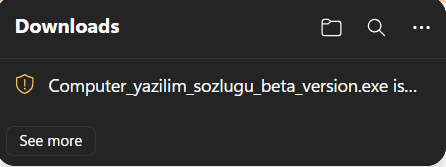
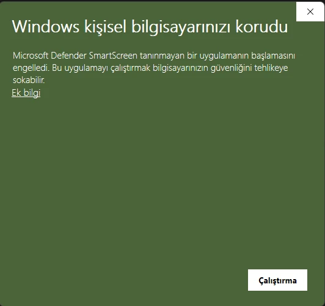

Windowsta uygulamayı kurmak aslında çok basit ana menüdeki .exe veya .zp dosyasını açarak exeyi kurabilirsiniz.

Bu uyarı genelde chorenin alt yapısını kullanan tarayıcılarca olur nedeni tarayıcının beni tahdit olarak görmesidir bu durumda .Zip uzantılı sosyayı indirmenizi ve onu ayıklayıp içindeki exe dosyasını açmazı öneririm.

Bu uyarı exeyi açarken karşınıza çıkıcaktır ama korkmayın bu bi virüs uyarısı değildir windows işletim sisteminin benim bi dijital sertfikam olmadığı için benim uygulamamı bi tehdit olarak görmesidir. Ek bilgi yazısına tıklayın ve ordan yinede çalıştır butonuna basın sistem onu kapatıp tekrar açtığınızda tehdit olarak artıı görmeyecektir yinede görürse aynı işlevi tekrarlayın.
Linux sistemler aksine windowstan daha kolaydır bunun için ister .zip dosyasını indirin istersenizde uzantısız linux dosyasını indirin ikiside çalışır, uzantısız linux dosyasını indirdikten sonra dosyanın indiği klasöre sağ tık > Terminal aç, diyin karşınıza o yere bağlı olarak terminal açılcaktır. he diyelim açılmadı terminali açın ve cd ~/Dosyanin olduğu_konum yazarak oraya gidin.Sonra o uygulamayı çalıştırmak için terminale ./Computer_yazilim_sozlugu_beta_version yazın uygulama çalışcaktır, .zip indirdiyseniz zipi ayıklayın ve içine girin sonra orda terminal açın, ve terminale ./Computer_yazilim_sozlugu_beta_version yazın uygulama çalışacaktır.